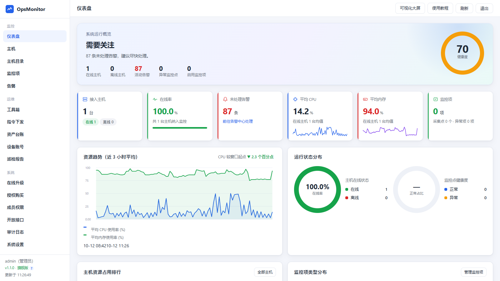
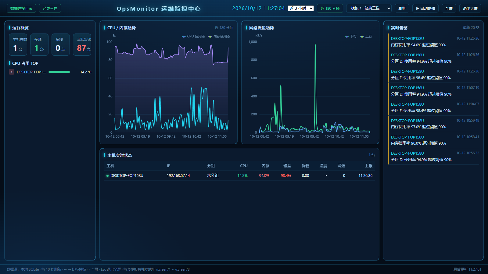
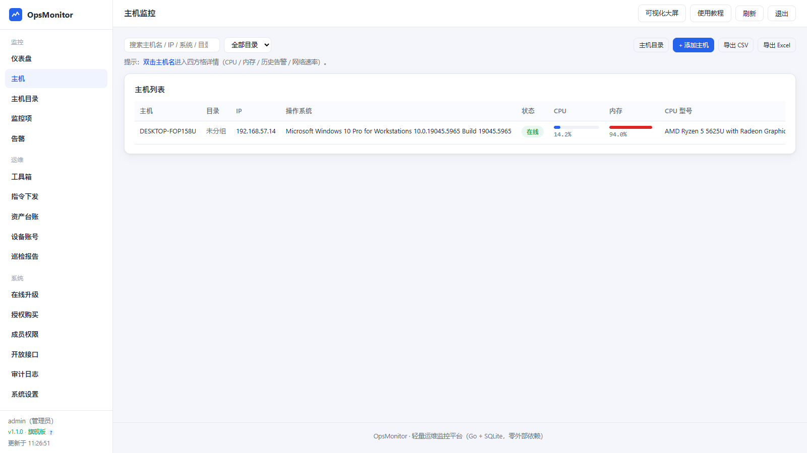
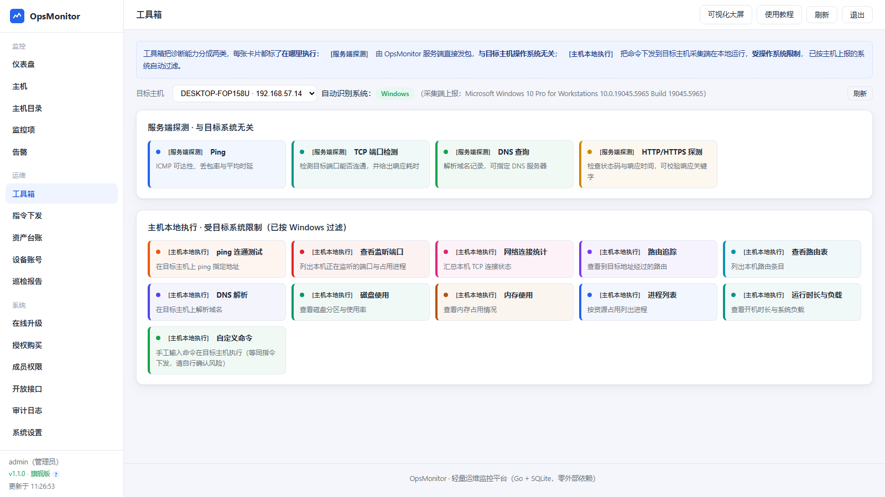

Strix 部署教程
开箱即用的轻量级分布式运维监控系统。一个二进制 + 一个 SQLite 文件即可跑完整套监控， 零模板、零脚本、零 CDN 依赖，内网离线可用。
Go 1.23
SQLite 单文件
CGO_ENABLED=0 静态二进制
全中文 UI
Apache-2.0
二开版 1.2.2
一分钟了解
整套系统只有两个角色：监控端（server）提供控制台、大屏、API 与服务端探针； 采集端（agent）装在被监控主机上采集指标。把监控端跑起来后，采集端在控制台 「监控 → 添加主机」一键下发安装即可。
先确认该下哪个文件
每个版本有 11 个产物：监控端与采集端 × Linux/macOS/Windows × amd64/arm64，外加 Windows 旧系统兼容版。
选错架构会直接报 Exec format error，先看 产物与架构 再动手。
系统架构
界面预览




核心特性
🪶
极轻量
Go + SQLite 单文件，服务端常驻内存 20MB 以内，无需 JDK / Tomcat / MySQL。
📦
单文件静态部署
全平台产物均为 CGO_ENABLED=0 纯静态二进制，不依赖 glibc/系统库版本。
🔌
零 CDN 依赖
控制台、大屏、教程与 ECharts 全部内嵌，内网离线环境开箱可用。
🌐
跨平台一致
采集端基于 gopsutil 抽象，Linux / Windows / macOS / Unix 行为一致。